Оригинальный, классический, вкусный, по любому поводу! Салат Цезарь классический с курицей названный так совсем не в честь римского императора, а по имени шеф-повара Цезаря Кардини, который, по легенде, накормил однажды голливудских актеров салатом из того, что было. Теперь он и на вашем столе!
| Показатель | Белки | Жиры | Углеводы |
| Процентное соотношение | 32% | 35% | 32% |
| Граммы | 10 грамм | 11 грамм | 10 грамм |
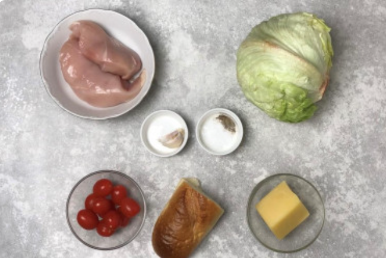
Как сделать Салат Цезарь классический с курицей? Подготовьте продукты для приготовления салата.
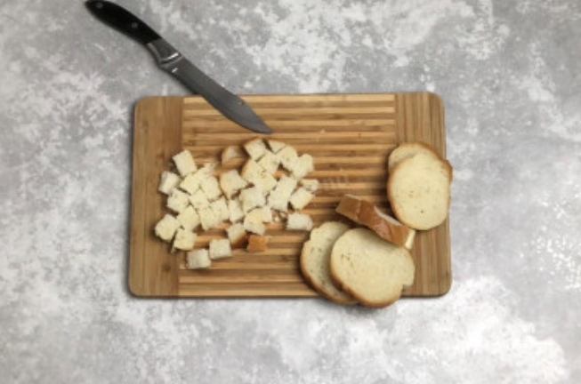
Батон нарежьте на небольшие кубики.
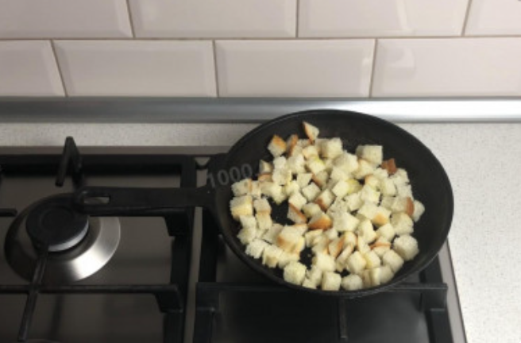
На сковороду налейте немного растительного масла, положите очищенный и раздавленный зубчик чеснока. Выложите нарезанный хлеб, перемешайте. Жарьте гренки на самом маленьком огне до хрустящего состояния. Время от времени их необходимо перемешивать. Если чеснок начнет подгорать, уберите его. Именно поэтому его не надо сильно измельчать.
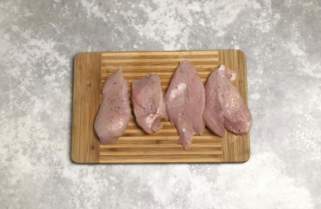
Куриное филе нарежьте на небольшие медальоны одинакового размера. Посолите и поперчите их.
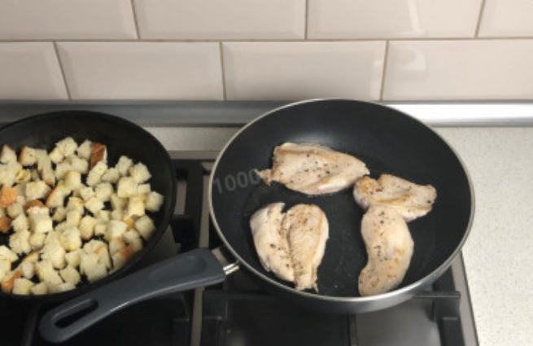
Поджарьте филе на сковороде с небольшим количеством растительного масла с двух сторон до румяной корочки. Готовое филе снимите со сковороды и остудите.
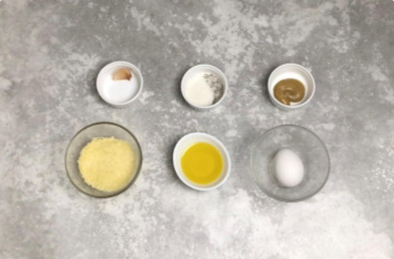
Подготовьте продукты для приготовления соуса. Учтите, что вкус будущего соуса напрямую зависит от выбранных для него ингредиентов. Горчицу выбирайте ту, которую любите, но желательно не очень острую, чтобы она не забила вкус остальных составляющих. Сыр и масло должны быть качественными, вкусными. Яйцо выбирайте свежее.
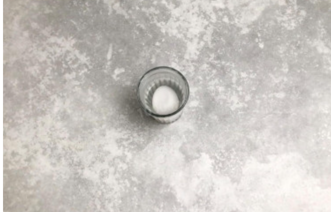
Яйцо положите в стакан и залейте крутым кипятком. Подержите его в таком виде минуту-две. Таким образом оно не сварится, но хорошо продезинфицируется.
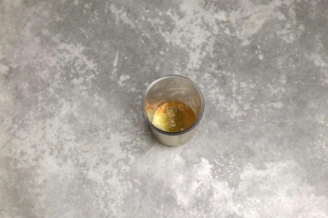
В стакан для взбивания разбейте подготовленное яйцо, положите пармезан, горчицу, сахар, соль, масло и измельченный чеснок.
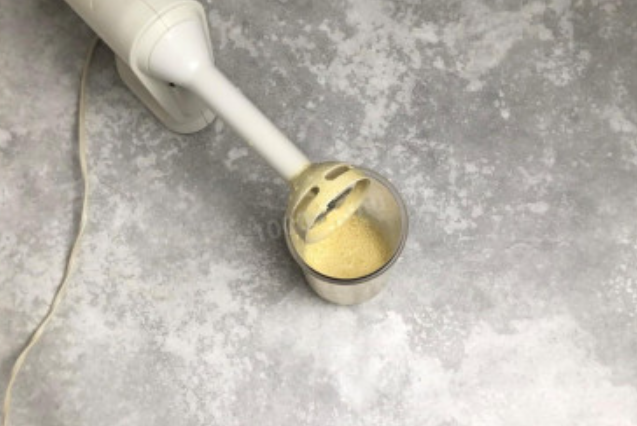
Короткими импульсными движениями взбейте все ингредиенты до состояния соуса. Он получится не сильно густым, но все-таки немного гуще воды.
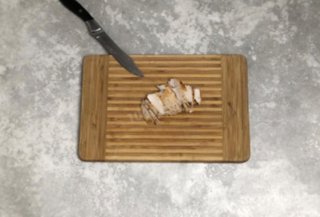
Остывшее филе нарежьте на небольшие кусочки.
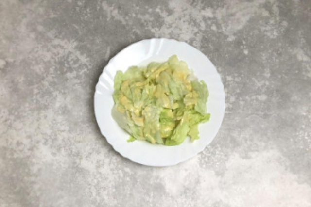
Остывшее филе нарежьте на небольшие кусочки.
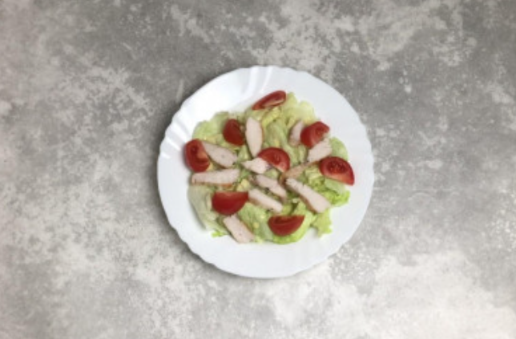
Разложите кусочки курицы и порезанные помидорки.
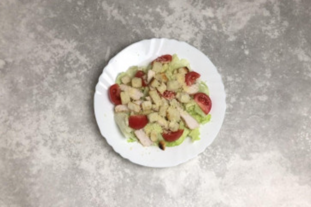
Сверху положите сухарики. Посыпьте натертым пармезаном.
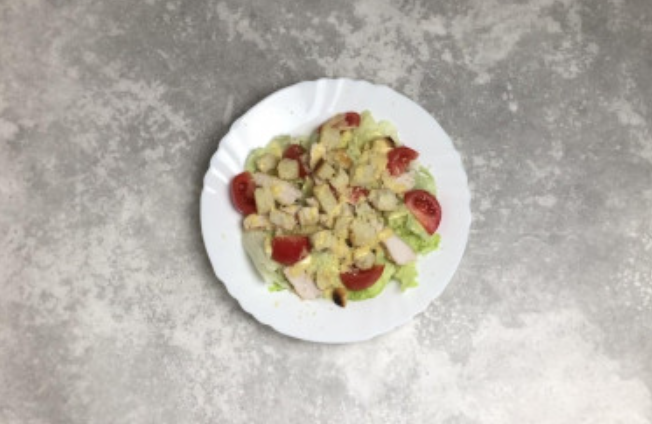
И в заключении еще раз полейте весь салат соусом. Сразу же подавайте, чтобы гренки не успели размокнуть.
Больше рецептов на 1000 menu